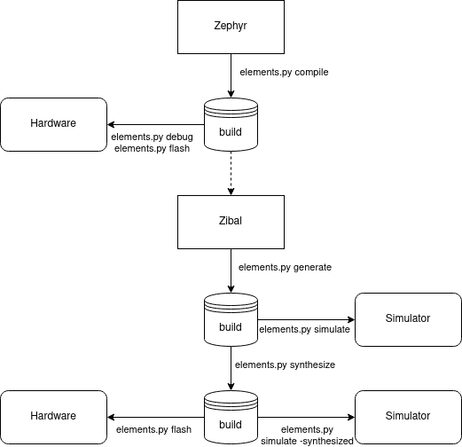

Prerequisites¶
Linux host system (Ubuntu 20.04 recommended)
Python 3 (python3.8-dev)
Vivado for Xilinx platforms (optional)
Installation¶
Install required packages:
sudo apt install ssh git libtool-bin autotools-dev automake pkg-config libyaml-dev cmake sudo apt install python3 python3.8-dev python3-pip virtualenv gdb sudo apt install iverilog gtkwave libcanberra-gtk-module libcanberra-gtk3-module sudo apt install libtinfo5 libncurses5
Download the repository:
git clone https://github.com/phytec-labs/elements-sdk.git cd elements-sdk/
Create a virtualenv:
virtualenv -p python3 venv
Initialise the SDK:
python3 elements.py init
Vivado¶
The Vivado toolchain is not part of this SDK and needs to be installed separately for Xilinx
platforms from Xilinx’s homepage. Download the Linux Self Extracting Web Installer for Version
2019.2 and install it. Ignore the warnings about the Not Supported Linux OS and do not install the
latest version. You can use the Vivado HL WebPACK license for free if you do not sell the bitsream
and disable everything except the Artix-7 Platform to save disk storage. Elements excepts to find
the Vivado toolchain under /opt/xilinx.
chmod +x ~/Downloads/Xilinx_Unified_2019.2_1106_2127_Lin64.bin
~/Downloads/Xilinx_Unified_2019.2_1106_2127_Lin64.bin
Definitions¶
This section shortly describes some definitions for clarification in the further documentation.
Application¶
An application is the user-level software. It’s build in the firmware and will be started by Zephyr. Custom applications for boards will be added as application during the Zephyr compile process.
SOC¶
A System on Chip (SOC) is the Microcontroller design. On FPGA based SOCs, the application is added to the memory and deployed alongside the Verilog files.
Board¶
A Board is a SOC with a specific pin-out. While the SOC only defines the in- and output-pins, a boards maps these to physical IOs of a package.
Flows¶
The SDK has some stages to generate a MCU and its firmware from sources. This section describes each stage and the flow between them.
{kind=link}
Entry point for this flow is Zephyr. The compiled output will be stored in a build directoy and can immediately used by GDB. The Zephyr output is a dependency for FPGA based designs and need to be compiled before. The next stage generates the MCU files for the specific SOC and places these again in the build storage. A simulator can than be used to run the design on the local machine without any hardware. The last stage is the synthesizing of the design files into the specific hardware architecture. The synthesized design can be simulated again or flashed to the hardware.
Usage¶
The SDK flow can be used with the elements.py tool. The next chapters explain each stage of
the flow. However, the help text can also support with the built-in commands.
./elements.py -h
Compile (Zephyr)¶
The compile command compiles an application for a board. Both values must be passed as
mandatory argument. An optional flag -f can force to not use the build cache and compile
entirely new.
./elements.py compile <board> <application> [-f]
Example to compile the LED demo for DH-006:
./elements.py compile DH-006 zephyr-samples/demo/leds
Generate (Zibal)¶
The generate command can build various different SOC designs. It only takes the name of the
SOC as parameter.
Hint: FPGA based SOC designs will add the compiled Zephyr output into the memory.
./elements.py generate <soc>
Example to build the Hydrogen-1 SOC:
./elements.py generate Hydrogen1
Simulation¶
Since a board is always built on a specific SOC design, simulations can be done on board-level.
The simulate command takes as parameter the name of the board. The toolchain can be passed with
the optional parameter --toolchain. The Xilinx toolchain is selected by default. A further
flag -synthesized can be used to simulate a synthesized design. This flag is currently only
available for the Xilinx toolchain.
./elements.py simulate <board> [--toolchain <xilinx/oss>] [-synthesized]
Example to simulate DH-006:
./elements.py simulate DH-006
Synthesize¶
The synthesize is similiar to the simulation. It can synthesize a SOC design on board-level.
./elements.py synthesize <board> [--toolchain <xilinx>]
Example to simulate DH-006:
./elements.py synthesize DH-006
Flash¶
This command flashes a bitsream directly into a FPGA or permantly into a SPI NOR. Alternatively, it can also flash a firmware into the memory of the MCU. The FPGA destination is set by default.
./elements.py flash <board> [--destination <fpga/spi/memory>]
Example to flash the FPGA:
./elements.py flash DH-006
Debug¶
The debug command supports debugging the firmware. It flashes a new firmware and opens a debugger (GDB) before starting at start address.
./elements.py debug
Example to flash the firmware into the memory and start at the start address:
./elements.py debug
Docker¶
A Dockerfile is provided for systems which do not run with the recommended versions. The Docker will have included all required packages for the SDK.
sudo docker build -t elements-sdk:1.0 .
sudo docker run elements-sdk:1.0 ./elements.py compile DH-006 zephyr-samples/demo/leds
Hint: Only compile and generate are currently supported.